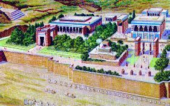
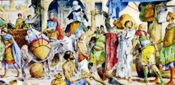
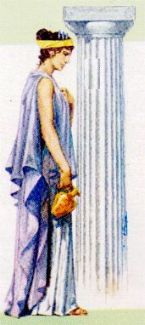

éloigné du service
militaire, il a dácidá de voyager à Listra avec le objectif de rencontrer
Juliana. 
Dans Caesarea il a embarqué dans un bateau à Antioche et de là il a été à Licaonia, où se trouva Listra une ville d'approximativement 15.000 habitants. Son territoire s’étendait à travers des versants des montagnes rocheuses, que le offrait un bouclier concret et naturel. Dans le centre, était la Citadelle, avec ses tours et ses forteresses. Les rues étaient étroites et avaient grand mouvement des personnes, en révélant une population travailleuse que s'inquiétait avec leurs devoirs journaliers.
Longinus est resté dans l’Auberge Khalil, près de la Citadelle.
La nuit était très clair, illuminée par une majestueuse lune pleine, et la température encore était très haute, par motif du chaud brélant qu’il a fait ce jour.
Il est sorti pour une promenade afin de connaître la ville et apprécier la beauté locale.
Dans une petite place où avait une fontaine de l'eau, il a perçu diverses personnes que silencieusement ils écoutaient un prédicateur. Pris par la curiosité, il a s’approché, voulait savoir le que cet homme disait. Il était Paul de Tarso, Apôtre du SEIGNEUR JÉSUS, et il apprenait la doctrine Chrétienne. La plupart des spectateurs étaient Chrétien, ou se préparait par recevoir le Baptême (ils étaient des catéchumènes). Mais il y avait aussi des personnes curieuses comme lui, qu’ont été attirée par la parole vigoureuse du prédicateur. Alors, Longinus a eu l'occasion de témoigner une scène notable que marqué profondáment le son esprit: Un homme né estropié s’est assis dans la première ligné, a côté de Paul pour écouter ses mots sur la infini miséricorde du CRÉATEUR. Quelque temps après, il a fait des signes avec la main en demandant l'autorisation à parler:

L'Apôtre en percevant la sincérité de cet homme et son espoir dans la miséricorde Divine, a regardá dans ses yeux et a dit:
"Obéissez aux Commandements et procurez de aimer le DIEU et aussi au «prochain», avec tout les forces de votre cÅ“ur".
Alors, avec ses bras ouverts et en regardant le ciel, il a dit:
- "Dans le Nom du SEIGNEUR JÉSUS, LE CHRIST, levez-vous de cette chaise et allez par votre maison".
L'homme estropié étourdi par le miracle, avec agilité a sauté hors de son chaise et est resté debout beaucoup de épouvante! Et le suivre, en donnant expansion le son joie, il a marché normalement et jusqu’à faisant amusement comme un enfant turbulent, pendant que la foule surpris et admiré, applaudissait avec contentement et bonheur, en louant et en glorifiant le DIEU, en témoignant cet incontestable miracle. (Actes 14,8-10)
Tandis qu'ils célébraient le miracle et la foule rempli de curiosité voulait voir de près et parler avec cet homme que toutes les personnes le connaissaient comme né estropié, Paul a essayé dáéchapper humblement.
Dans le jour suivant, la ville s’est réveillée avec les précieuses nouvelles que s’a dispersé rapidement dans toutes les directions : de la cure miraculeuse de cet homme né estropié.
Le centurion, plein de volonté, a commencé son recherche pour trouver où était la propriété d'Orlando Taglivine. De fait, ce n'était pas difficile, car il était très bien connu. Bientôt il a commencé à savoir où c'était, et aussi la meilleure façon d'arriver là. La route était bonne et facile de suivre, et n'était pas lointain. Mais, il a hésité dans aller là. Dans ses pensées fluaient une quantité de réflexions que quelquefois le encourageait, et que de autres fois le dácourageait... Il pensait: Et si c'est elle mariée?... Sera est-ce qu’elle a encore le amour par moi avec la même intensité de quand nous étions jeunes? Sera est-ce qu'elle acceptera moi naturellement maintenant que je suis un mutilé de guerre?
Torturé et intimidá par un courant de pensées négatives, il a passé ce premier jour en marchant pour la ville, en assemblant plus d'information et mûrissant le son courage.
Dans le jour suivant il a réveillé avec une idáe fixe: il a demandá un jeune par aller acheter une boîte de raisins dans la propriété du seigneur Orlando, avec la recommandation spécial de chercher Juliana et dire à lui la nouvelle: "Dans Alexandrie, Longinus pendant un combat contre les barbares de l'Est, avait été blessé gravement et mutilé".
Le messager a accompli entièrement la mission et est revenu à ville. Devant de Longinus il a dit que Juliana a resté très embarrassée avec la nouvelle, et qu’elle n’a eu pas aucune réaction et n’a fait pas quelque question. Elle était perplexe...
En administrant la même stratégie, deux jours plus tard, Longinus a demandá la même personne acheter autre boîte de raisins.
 La dame aussitôt l'a
reconnu le messager d'une certaine distance et a couru jusqu’à lui, mais à ce
temps, elle a répandu un torrent des beaucoup des questions! Elle voulait savoir
tout sur Longinus. Elle avait passé deux jours terribles, avec très incertitudes
et dans "complet suspens". Elle n'était pas capable de concentrer dans le travail, pourquoi son
imagination était prise par la nouvelle. Pour cette raison, maintenant, elle voulait
savoir même la verité concernant à lui, comme lui était se passé de vraiment, comme
était son santé, et principalement, où il était.
La dame aussitôt l'a
reconnu le messager d'une certaine distance et a couru jusqu’à lui, mais à ce
temps, elle a répandu un torrent des beaucoup des questions! Elle voulait savoir
tout sur Longinus. Elle avait passé deux jours terribles, avec très incertitudes
et dans "complet suspens". Elle n'était pas capable de concentrer dans le travail, pourquoi son
imagination était prise par la nouvelle. Pour cette raison, maintenant, elle voulait
savoir même la verité concernant à lui, comme lui était se passé de vraiment, comme
était son santé, et principalement, où il était.
Le jeune convenablement instruit, a essayé de ne répondre pas dáune façon simple et directe, il a présenté arguments sans consistance, incomplet et énigmatique, parce qu'il ne savait pas aussi la totalité des les faits que se ont passé à Longinus. Toutefois, en avant de l’insistance de Juliana, il a donné l'adresse d'Auberge Khalil et a dit, que dans celle-là elle pourrait obtenir la meilleure information de Longinus.
Bien qu'elle dásirait ardemment les nouvelles plus récents, mais le travail ne pouvait pas être arrété. Elle a attendu le matin du prochain dimanche... Avec sa mère ont marché vite à la ville.
Longinus, en usant son uniforme de Centurion Romain, plein d'espoir, a regardá à travers de la fenêtre du bâtiment et il a vu ces deux dames qui marchaient très agile dans direction de l'Auberge. Il en étant assure que seulement ce pouvaient être Juliana et sa mère, il est descendu en bas les escaliers et a traversé la rue, a tourné les dos dans la direction à où elles venaient, en dissimulant voir quelque chose de très important dans autre direction. Quand les femmes ont arrivé plus proche à l'Auberge, elles ont pu distinguer que dans l’autre côté de la rue était un beau Centurion Romain, un homme fort, de magnifique stature, lequel les faisait rappeler de quelqu'un très familier... Elles ont ralenti leurs pas et ont commencé à réfléchir et elles pensaient dans les mots que le jeune a dit, quand a été acheter les boîtes de raisins... En regardant le Centurion dáune façon minutieuse, elles ont perçu qu'il n'était pas un soldat ordinaire, mais un officiel classifié dáarmée et qu’il n’avait pas le bras gauche. Alors, elles ont compris que pouvait être Longinus, lui-même qui était là...
Avec un geste afflige et en essayant de cacher sa surprise, Juliana a apporté ses mains dans le visage et a commencé à pleurer, pendant que la mère tendrement consolait sa tristesse et dáception.
Longinus a perçu la proximité des femmes, et bien qu'il révélait être tout sous le contréle, mais son cÅ“ur était très minuscule et dásirait ardemment contenir Juliana dans son bras avec affection et passion. Mais il nécessitait de se contréler ... Il a imaginé que en avant de la situation actuelle, serait mieux espérer la réaction de elle...
La jeune dame, après un certain temps embrassé le sa mère, a calmé l’esprit et a regardá par cet homme qui continuait avec son dos en arrière à eux.
La mère a recommandá:
- "Fille, se vous voulez
nous pouvons revenir à notre maison, ou rencontrer les membres de la
Communauté 
- "Non, maman, Je suis bien. Sans doute, c'est triste de le voir mutilé, cependant la chose plus importante est qu'il est vivant. J'ai besoin de parler avec lui... Allons, mon mère "...
Ils ne ont dit pas quelques mots, les trois ont s’étreint l'un au l'autre et ont pleuré ensembles pour longtemps, dans une réaction que traduisait une immense joie, un grand bonheur, et principalement un remerciement à le DIEU par la opportunité de cette rencontre. Embrassées l'un au l'autre, ils ont marché à la fin de la rue où avait une petite bois avec fleurs à l’ombre des plusieurs arbres. Là ils ont continué la conversation et nãont perçu pas que les heures ont volé.
Ils sont revenus à la maison très heureuse...
Chaque nuit Longinus la visitait dans la propriété du seigneur Orlando, quand ils faisaient des plans pour le futur.
Le seigneur Orlando était marié, mais il n'avait pas de fils. Et alors, il avait besoin d'une personne responsable par l'aider dá au travail dans la fabrication de vin. Il a invité Longinus pour travailler dans son propriété. L'invitation a été accueillie, parce que le Centurion ne voulait pas laisser sa belle-mère, Mme Silvana, là seul, elle que toujours a été une mère zélé et compagne inséparable de sa fil Juliana.
Leurs plans ont commencé à se concréter. Il, la belle-mère et Silvana habiteraient en une petite maison que existait dans la propriété agricole. Après, avec le temps, ils travailleraient dans l’ampliation de la maison pour fournir plus de confort à tout d'eux.
En ayant tout de ce résolu, il a dácidá de voyager à Jérusalem, par informer aux autorités de son nouvelle adresse dans Listra, et prendre des mesures nécessaires pour qu’ait été envoyé mensuellement à lui, le solde qu'il recevait de la Légion Romaine.